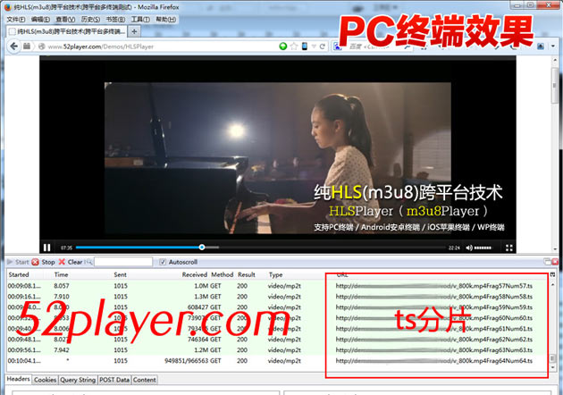

下载排行榜 网页播放器 音乐播放器 视频播放器
播放器功能(提示：请在IIS下或其它网站环境下测试)： 纯HLS(m3u8)跨平台技术(HLSPlayer,m3u8Player跨平台多终端) 1. 这是一款支持m3u8地址在PC电脑端和移动端(安卓Android,苹果IOS等)播放视频的播放器。 2. 注意：本实例仅支持hls(m3u8)地址，不支持flv,mp4,mov,f4v,3gp格式，这点请特别注意！ 3. 本实例做了跨平台的适配， 支持PC终端,Android安卓终端,iOS苹果终端,WP终端的正常播放。 * 提示1：本实例请在IIS/Apache等网站环境下测试; * 提示2：本实例仅支持m3u8/不支持flv,mp4,f4v; * 提示3：本实例要求用户自身有获取到了m3u8地址。 使用示例请看下载文件的说明文档
PC效果：

安卓效果：
<!--HLSPlayer代码开始--> <div class="video" id="HLSPlayer" > <SCRIPT LANGUAGE=JavaScript> <!-- /* * HLSPlayer参数应用======================= * @Contact QQ:261532593 * @param {Object} vID ID * @param {Object} vWidth 播放器宽度设置 * @param {Object} vHeight 播放器宽度设置 * @param {Object} vPlayer 播放器文件 * @param {Object} vHLSset HLS配置 * @param {Object} vPic 视频缩略图 * @param {Object} vCssurl 移动端CSS应用文件 * HLSPlayer参数应用======================= */ var vID = ""; var vWidth = "100%"; var vHeight = 400; var vPlayer = "HLSplayer.swf?v=1.5"; var vHLSset = "HLS.swf"; var vPic = "images/start.jpg"; var vCssurl = "images/mini.css"; //HLS(m3u8)地址,适配PC,安卓,iOS,WP var vHLSurl = "http://demo.cuplayer.com:8011/hls2-vod/test.mp4.m3u8"; //--> </SCRIPT> <script type="text/javascript" src="js/hls.min.js?rand=3396fsa778"></script> </div> <!--HLSPlayer代码结束-->